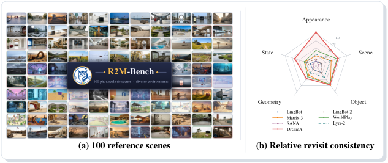
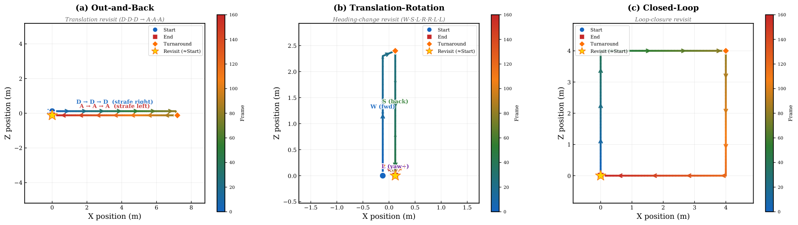
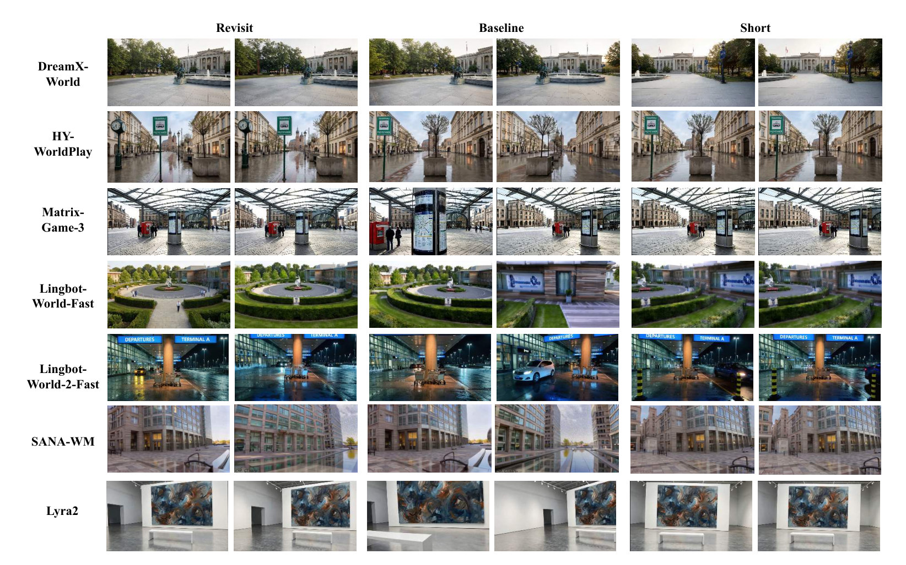
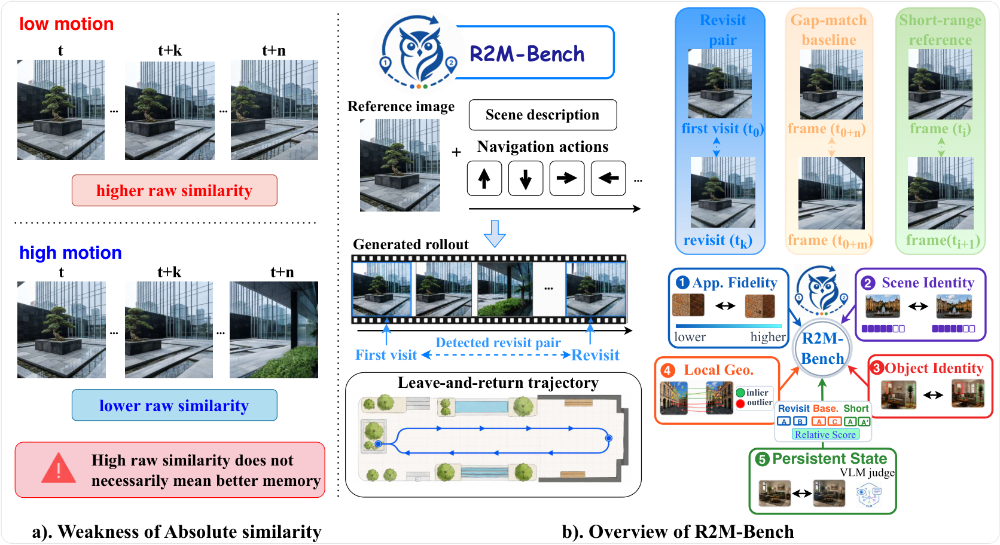
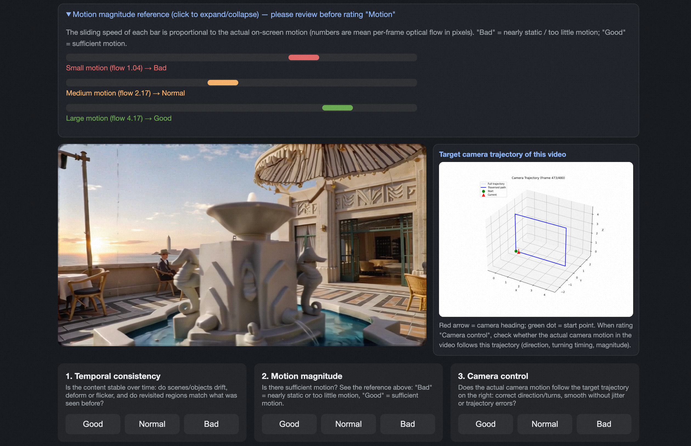

论文要解决的问题是:交互式视频世界模型(interactive video world models)会不会"记得"它看过的东西。玩家操纵相机走远再折返(revisit),同一个场景、同一个物体应当与离开前保持一致 —— 但现有评测要么只测短程时序一致性(相邻几帧),要么把"长时程一致性"与"外观质量"混在一起打分,没有一把专门量"重访时记忆是否还在"的尺子。
R2M-Bench 的答案不是造新模型,而是造一把相对校准的尺子:对每个重访对,从同一 rollout 里抽两组对照(时间间隔匹配的非重访对 + 短程对),用重访对的相似度相对这两组对照的偏移量来定义记忆得分。这样模型本身的生成质量、场景纹理复杂度等混淆因素被同 rollout 差分消掉,剩下的才是"记忆"本身的贡献。
把"世界模型有没有记忆"这个玄学问题,变成一个可复现、可差分、与人工评估对齐(Spearman ρ=0.547)的回归型基准;七个主流模型上测出 0.016 ~ 0.706 的 NMR 分差,证明当前世界模型的"重访记忆"差距远大于外观质量差距 —— 这是外观类指标完全看不见的维度。

FVD、VBench 等主流指标测的是相邻帧或短窗口的时序一致性。重访记忆要求的是分钟量级、中间隔着大量新内容后仍保持一致,两者机制完全不同:前者靠局部平滑,后者靠显式或隐式的长期存储。
直接比较"重访对 PSNR / CLIP 相似度"时,生成质量高、画面保守的模型天然占优 —— 它跟自己任何两帧都像。绝对相似度混入了与记忆无关的模型固有多样性,排序失真(§11 的 Raw 排名与 NMR 排名大幅互换就是实证)。
各模型论文自选演示轨迹,重访时机、视角变化、路径长度都不一致,结果不可比。没有统一的重访轨迹协议,就没有跨模型比较的公共坐标系。
| 假设 | 论文依据 | 何时会失效 |
|---|---|---|
| gap-matched baseline 能近似"无记忆条件下该模型对同场景的相似度" | §3.2 对照组设计 | 场景本身高度自相似(对称走廊、重复纹理墙面)时 baseline 偏高、动态范围收窄 → 引入 Dynamic Range 过滤(§5 式8) |
| 三模板轨迹覆盖了主要重访模式 | §3.1 + 轨迹可视化 | 自由探索中"多次重访同一地点""重访时主动变角度"等复合模式未显式覆盖;revisit_loop 只有单一闭环形状 |
| 五族指标等权平均反映整体记忆质量 | §4 聚合协议 | 下游任务只关心某一侧面(如机器人抓取只关心 object state)时,等权聚合会稀释关键维度 |
| VLM(Gemini)评分可替代人工 Persistent State 评估 | §4.5 + 附录人评对齐 | VLM 对缓慢状态变化(水位缓慢下降)的敏感度存疑,且评分依赖 prompt 模板稳定性 |
R2M-Bench 用三种参数化轨迹模板刻画不同的重访模式,每种模板在 100 个场景上实例化(源码 trajectories/ 目录,每个场景一份 JSON)。实测单条轨迹 481 帧 / 30s(fps=16),内参 K 固定:fx=fy≈969.77,cx=960,cy=540。

D 键推进 × 3 → A 键后退 × 3,同视角原路折返,相机朝向不变,重访帧与离开帧视角几乎相同 —— 测最纯粹的重访外观一致性。DDDAAA 每帧平移步长约 1/60 米(实测 trajectory JSON 位移差分)。
W 前进、S 后退、平移、上升、R/L(Q/E)旋转 —— 折返前先做平移与旋转,重访时视角与离开时不同。测跨视角的记忆(更接近真实探索行为)。
长时程闭环:走一大圈后回到起点,中间穿插大量新场景内容。重访间隔最长、干扰最多 —— 测极限长程记忆,区分度最大(七模型 NMR 差距在此模板上最显著)。
100 个场景来自 R2M 自建场景集(meta_data/ 下三个 JSON,含场景元信息),覆盖自然景观、街景、室内空间等。每场景以单帧首图为条件,模型自回归 rollout 481 帧,再在 rollout 内按模板定义的键序时序抽取重访对与对照对。轨迹与场景元数据全部随代码开源,保证任何模型在同一坐标系下可比。
R2M 的方法论支点是同 rollout 相对校准(same-rollout relative calibration):所有对(重访对与对照对)都来自同一条 rollout,因此模型固有的生成风格、场景纹理复杂度、画质水平等混淆因素在三组之间是共享的,做差分即可消掉。
| 符号 | 含义 | 来源/取值 |
|---|---|---|
| $s^{rv}_i$ | 第 $i$ 个重访对的相似度分数 | 五族指标任一维度 $d$ 上的打分 $S_d(\cdot,\cdot)$ |
| $s^{base}_i$ | 第 $i$ 个 gap-matched baseline 对的相似度 | 与重访对时间间隔相同但两帧都不在重访区间的随机对 |
| $s^{short}_i$ | 第 $i$ 个 short-range 对的相似度 | 时间间隔很短(相邻几帧)的对 |
| $\mathcal{D}_{dyn}$ | 动态范围 $= \bar{s}^{short} - \bar{s}^{base}$ | 该 rollout 上"可归因于记忆的相似度摆动空间" |
| $G_d$ / $N_d$ | 维度 $d$ 上的 MemoryGain / NMR | 式(7) / 式(9) |
| $T$ | rollout 总帧数 | 实测 481 |
重访段帧 vs 离开前对应帧。它是被测对象 —— 相似度高说明模型"记得",但单独看它没有意义(不知道高是记忆还是底色)。
与重访对时间间隔一致、但两端都落在非重访区间的对。它测的是"隔这么久、看了这么多新内容之后,模型画同场景的默认自相似度" —— 记忆为零时的参照。
相邻短间隔对,测模型的短时一致性上界。它与 baseline 的差(动态范围)定义了"记忆能把相似度从底色拉高多少"的量程。

重访对均值减 baseline 对均值。$MG>0$ 说明重访时相似度高于"无记忆默认值",超出部分即记忆的净贡献。但 MG 仍有量纲问题:不同指标(PSNR 差 1dB 和 LPIPS 差 0.05 不可比),不同模型动态范围也不同 —— 保守模型 baseline 高、量程小,同 MG 含义完全不同。
动态范围过小说明"短程与长间隔都差不多" —— 该维度在这个 rollout 上根本没有区分记忆的能力(天花板与地板重合),打分无意义,直接丢弃。论文写 $\epsilon=10^{-8}$,但代码实现是 MIN_DYNAMIC_RANGE = 1e-5(eval_revisit_nmr.py:656)—— 论文-代码差异之一,详见 §10。
NMR 把 MG 除以动态范围,语义是"记忆把相似度拉高了可用量程的百分之几":NMR=0 与 baseline 持平(无记忆),NMR=1 追平短程一致性(满记忆),NMR>1 表示重访一致性超过了短程对(可能因重访帧与离开帧内容重叠度天然高于相邻帧,属正常现象,聚合时不截断)。
先在每个 rollout 内计算 MG/NMR(保证差分干净),再按"模板 → 场景 → 维度族"逐层平均,最后五族等权合成 Overall NMR。等权的理由:五族分别对应记忆的不同侧面,没有先验理由认为哪个更重要;代价是对单一侧面的极端退化不敏感(见 §15 改进方向)。
eval_revisit_nmr.py:1095/1099)实际用 $\lfloor T/30 \rfloor$。按 T=481 计,论文口径 ≈24 帧,代码口径 =16 帧。影响:代码比论文排得更紧,baseline 对可能更靠近重访区间,baseline 相似度可能略被抬高 → NMR 略被压低。属对全体模型一致的系统偏差,不改变排序,但复现论文数字时必须以代码为准。
单一相似度测不出记忆的多面性。R2M 设计了五个正交维度族,从像素级到语义级到状态级,每族内部由若干子指标组成,族内平均后参与 Overall 等权合成。
| 维度族 | 子指标(实现) | 测什么 | 对什么"不记得"敏感 |
|---|---|---|---|
| Appearance Fidelity | PSNR / SSIM / LPIPS | 重访帧与离开帧的像素级保真 | 颜色漂移、纹理重生成为不同样式 |
| Scene Identity | DINOv2 / BoQ / MutualVPR 特征余弦相似度 | 场景级语义身份是否保持 | 场景结构重排(同一街角长出不同建筑) |
| Object Identity | GroundingDINO + SAM2 重检测 + DINOv2/CLIP(App./Sem. Persist) | 离开前标注的物体,重访时还在吗、还是同一个吗 | 物体消失、变形、被替换成语义近邻 |
| Local Geometry | SuperPoint + LightGlue 匹配率 / RANSAC 内点率 | 局部几何结构(角点/边缘布局)是否稳定 | 几何布局畸变(墙面弯曲、深度结构错乱) |
| Persistent State | VLM(Gemini-3.1-Pro-Preview)结构化评分 | 动态状态是否持久(门开/关、火焰燃/熄) | 状态回退(离开时开的门回来变关) |

两个失败模式像素指标抓不到:① 全局色调一致但物体被换掉(Object Identity 抓);② 像素都对但深度结构错乱(Local Geometry 抓)。反过来 Scene Identity 高但 LPIPS 差,可能是重光照而非遗忘 —— 五族交叉能定位失败类型。
"门的状态是开是关"无法用任何检索式指标判定 —— 两帧都检测得到"门",但状态字段的比较需要语义理解。R2M 用 Gemini 结构化输出(离开前帧 + 重访帧 → 状态是否一致)补上这一层,代价是引入 VLM 自身的评分噪声(§8)。
Object Identity 族回答的问题是:离开前看到的那只狗、那辆车、那个路牌,重访时还在原地、还是原来那个吗?它的实现是一条"标注 → 重检测 → 嵌入比对"的三段管线,而不是简单的帧级检索。
对离开前帧(重访对的 anchor 端)运行 GroundingDINO 检测,取 top-K 物体(K 默认 10),SAM2 分割出精确 mask,每个物体裁出 patch 并算 DINOv2(外观)+ CLIP(语义)两组嵌入,连同类别名一起存为"物体账本"。
对重访帧独立跑同一条 GroundingDINO + SAM2(不看成离开帧的检测结果),得到重访时刻视角下的物体集合与嵌入 —— 如果模型忘了这个物体,重检测就会漏检或位置漂移。
离开帧账本中的每个物体,在重访帧集合里找最近邻:IoU/mask 重叠定位 + DINOv2 余弦(外观持久性 App. Persist)+ CLIP 余弦(语义持久性 Sem. Persist)。两个子分数按式(14)加权合成 Object Persist 分。
max_objects=20、$w_{app}=0.7$/$w_{sem}=0.3(eval_gpu_metrics.py:231);但 CLI 入口实际覆盖为 max_objects=10、$w_{app}=w_{sem}=0.5$(eval_gpu_metrics.py:235)。论文式(14)写 0.5/0.5,实际运行路径与论文一致 —— 构造函数默认值是死代码,但读源码时容易误判。max_objects 同理:实际评测取 top-10 物体,不是 20。
帧级 Scene Identity(DINOv2/BoQ)回答"这两帧像不像同一场景",对单个小物体的遗忘不敏感(背景占主导);Object Identity 把每个物体当独立单元逐一核对,单物体消失/替换直接拉低分数。两者结合才能同时抓住"整体还在、细节丢了"与"整体漂了、细节还在"两类失败。
Appearance/Identity/Geometry 三族都是"检索式"指标 —— 算两帧的特征距离。但有一类记忆失败它们全部失明:可变状态。门开→关、火焰燃→熄、机器人臂抬起→放下,这些状态变化不改变"是同一个物体",嵌入距离几乎不动,但世界语义已经变了。
R2M 用 Gemini-3.1-Pro-Preview 做结构化评分:输入离开前帧与重访帧(以及中间若干关键帧),要求 VLM 按 checklist 输出每个"可变状态物体"的状态是否一致(开/关、燃/熄、满/空),输出 JSON 结构化结果后聚合成 0~1 分。Prompt 模板随代码开源(src/metrics/ 下 persistent_state 实现)。
状态类型开放集合(任何物体都可能有可变状态),训练判别器需要枚举状态类型、无法泛化;VLM 的零样本语义判断天然覆盖开放集,且 prompt 可随任务语义定制(机器人场景可加"关节角度"检查项)。
VLM 评分引入自身偏差(对缓慢变化不敏感、对光照变化可能误判为状态变化),且逐对调用 API 的成本远高于本地指标。附录人评对齐显示该族与人工的相关性低于另外四族,是五族中最弱一环。

整条链路的关键性质:所有差分都发生在同一 rollout 内部(步骤④),因此模型底色、场景难度、随机种子在分子分母间完全对消 —— 这是 NMR 可跨模型比较的根本原因。
基于官方仓库 AMAP-ML/R2MBench 的源码通读(评测核心在 src/ 与 eval_revisit_nmr.py、eval_gpu_metrics.py 两个入口),以下为笔记验证过的实现要点。
R2MBench/
├── trajectories/ # 三种模板的轨迹 JSON(每场景一份,含显式 revisit 区间标注)
├── meta_data/ # 场景元信息(三个 JSON)
├── src/metrics/ # 五族指标实现
│ ├── appearance/ # PSNR/SSIM/LPIPS
│ ├── scene_identity/ # DINOv2/BoQ/MutualVPR
│ ├── object_identity/ # GroundingDINO+SAM2 管线
│ ├── local_geometry/ # SuperPoint+LightGlue/RANSAC
│ └── persistent_state/ # Gemini VLM 结构化评分
├── pair_sampling.py # 重访对 + 两组对照的抽样逻辑(exclusion radius 在此)
├── eval_revisit.py # 入口一:raw 相似度分数
└── eval_revisit_nmr.py # 入口二:NMR 相对校准主流水线
| 位置 | 内容 | 笔记点评 |
|---|---|---|
eval_revisit_nmr.py:656 | MIN_DYNAMIC_RANGE = 1e-5 | 论文式(8)写 $10^{-8}$;1e-5 更宽松,更多低区分度维度被丢弃而非输出噪声分 |
eval_revisit_nmr.py:1095/1099 | exclusion radius = T // 30 | 论文写 ⌊T/20⌉;按 T=481 得 16 帧 vs 论文 24 帧,baseline 抽样更靠近重访区间 |
eval_gpu_metrics.py:231 | 构造函数默认 max_objects=20, w=(0.7,0.3) | 死代码默认值;CLI 实际覆盖为 10/(0.5,0.5),与论文式(14)一致 |
eval_gpu_metrics.py:235 | CLI 入口 max_objects=10, w=(0.5,0.5) | 真实运行路径;复现实验按此配置 |
pair_sampling.py | 重访对按轨迹 JSON 的 revisit 区间标注抽取 | 不是按键序猜测,区间是显式元数据 —— 保证三组对时间结构严格对齐 |
7 模型 × 100 场景 × 3 模板 = 2100 条 rollout(每条 481 帧推理)+ 五族指标中四族本地前向(GroundingDINO/SAM2/DINOv2/SuperPoint 等)。论文未给总 GPU 时;粗估单条 rollout 推理数十秒 + 指标打分数十秒,全量 2100 条是数十 GPU·小时量级。⚠️【待核实:确切总耗时论文未披露】
Persistent State 族需逐对调 Gemini-3.1-Pro-Preview;重访对 + 对照对都要打,调用量与对数同阶。这是五族中唯一有持续 API 成本的,复现时预算要单列。
| 排名 | 模型 | Overall NMR | 阵营 | 备注 |
|---|---|---|---|---|
| 1 | DreamX-World-Memo | 0.706 | 作者自家人(DreamX Team) | 唯一显式带 memory 模块的参评模型 |
| 2 | HY-WorldPlay | 0.485 | 闭源(引 arXiv 2512.14614) | Raw 相似度榜第 1 |
| 3 | Matrix-Game 3.0 | 0.403 | 闭源(arXiv 2604.08995) | — |
| 4 | Lyra-2 | 0.310 | 开源(NVIDIA,库内笔记) | 带 3D cache 几何检索,详见 Lyra 2.0 笔记 |
| 5 | LingBot-World-2-Fast | 0.141 | 闭源 | — |
| 6 | LingBot-World-Fast | 0.100 | 闭源 | 同系前代,2-Fast 提升有限 |
| 7 | SANA-WM | ~0.016 | 闭源 | 近乎零记忆:重访表现与无记忆 baseline 几乎持平 |
同一批 rollout,用未校准的 Raw 相似度(重访对均值,不减 baseline)排名时:HY-WorldPlay 第 1,DreamX-World-Memo 掉到第 6(2.10);换成 NMR 后 DreamX 反超到第 1。两种口径的排序差异正是相对校准的价值所在:
HY-WorldPlay 生成保守、画面整体自相似度高 —— 它任何两帧都像(baseline 也高),Raw 分自然高;但这不等于记得住 —— NMR 把 baseline 减掉后,它的记忆净贡献排在 DreamX 之后。
DreamX-World-Memo 的 baseline 自相似度低(画面多样、敢生成新内容),但重访对相似度显著高于自己的 baseline —— 低底色 + 高重访 = 记忆信号强。这正是"有 memory 模块"应有的行为特征。
revisit_loop(最长时程闭环)是区分度最大的模板:七模型 NMR 差距在此拉到最大,SANA-WM 在此近乎归零;DDDAAA(同视角折返)对所有模型都最"容易",分数普遍偏高。这意味着若只看 DDDAAA,会高估全体模型的重访记忆水平 —— 长程闭环才是照妖镜。
作者用标注界面(图5)做人工重访记忆评分,验证 NMR 与人类感知的一致性:
ρ=0.547 属"中等偏强"对齐 —— 作为参考,图像质量领域的常用基准与人评对齐通常在 0.5~0.7 区间。NMR 并未达到"人评替身"级别,但显著优于未校准口径(论文附录给出 Raw 口径与 NMR 口径对齐度的对比,NMR 全面占优)。
这个去偏性质是相对校准设计的副产品红利:baseline 对与重访对来自同一 rollout,运动幅度天然匹配,差分后运动混杂自动对消 —— 不需要显式做光流归一化。
把 R2M-Bench 放进世界模型评测基准的坐标系里。对比对象覆盖通用视频质量基准、世界模型一致性基准与长视频评测三类,固定维度横向比较:
| 基准 | 测什么 | 长程一致性口径 | 混淆控制 | 交互轨迹 | 与 R2M 的本质差异 |
|---|---|---|---|---|---|
| VBench | 短视频生成 16 维度 | 无(短窗口时序一致性) | 各维度独立绝对分 | 无交互 | 完全测不到重访记忆;R2M 补上"离开-返回"这一长程模式 |
| WorldBench / 世界模型一致性类 | 指令跟随 + 物理合理性 | 多为固定事件检查 | 事件级判定,无底色校准 | 部分有 | 事件驱动 vs R2M 的轨迹驱动;R2M 不依赖人工枚举事件 |
| 长视频评测类(LongVideoBench 等) | 长视频理解问答 | 理解侧,非生成侧 | — | 无 | 任务方向相反(理解 vs 生成);但"跨长间隔检索信息"的思路与 R2M 同源 |
| FVD / FID 族 | 分布级生成质量 | 无 | 无 | 无 | 分布级指标对单条 rollout 的记忆失败完全不敏感 |
| 各模型自评协议(如 Lyra-2 的 G-R 检索) | 各自定义的长程一致性 | 模型私有,不可比 | 各异 | 各异 | R2M 提供公共坐标系:Lyra-2 在自家 G-R 指标上优秀,在 R2M 榜上 0.310 排第 4 —— 交叉验证了两个口径的分歧点 |
要长时程探索的应用(游戏 NPC 环境、机器人仿真、数字孪生)选世界模型时,R2M 榜比外观类榜单更有参考价值 —— SANA-WM 类"画面好但零记忆"的模型在这类应用里是隐形地雷。按模板拆分还能对齐业务:折返式巡检看 DDDAAA 分,自由探索看 loop 分。
NMR 是可微管线之外的标量奖励候选:rollout 期间周期性注入重访轨迹段,NMR 变体(单 rollout、免 VLM 的四族)可当 reward shaping 信号,训练时显式优化"记忆"。论文未做此实验,属自然延伸。
五族拆分 = 五路体检报告:Appearance 低→颜色/纹理漂移;Scene Identity 低→结构重排;Object 低→物体级遗忘;Geometry 低→深度错乱;State 低→状态回退。比单一 Overall 分更能定位该修哪个模块。
| 场景 | 适配度 | 改造要点 |
|---|---|---|
| 游戏世界生成(可探索地图) | ★★★★☆ 直接可用 | 轨迹模板改为游戏手柄键序;Persistent State checklist 加入游戏实体(箱子、门、开关) |
| 机器人仿真环境 | ★★★☆☆ 需裁剪 | 轨迹改为机械臂/底盘运动原语;Object Identity 的 top-10 需扩到工作台密集物体;VLM 族换任务专用判据 |
| 自动驾驶世界模型 | ★★★☆☆ 需扩展 | 重访模式改为"同路段多趟通过"(loop 天然契合);需加跨 rollout 的昼夜/天气条件轴 —— 这恰是 R2M 目前没测的"条件记忆" |
| 视频生成(非交互) | ★★☆☆☆ 有限 | 无交互控制权的纯生成模型无法执行轨迹模板,只能用"重访段提示词复现"的退化版本 |
五族等权是零先验妥协。改进:按下游任务学权重(机器人场景 Object/State 加权),或直接报告五族雷达图不合成 Overall —— 排名一个数字掩盖了 DreamX-Memo 是否靠单族拉分(其 Appearance/Scene 分族分布论文未细拆,无法排除"单族畸形高分撑起 0.706"的可能)。
gap-matched 对照只匹配了时间间隔,未匹配视角差 —— 重访对(尤其 DDDAAA)视角几乎相同,而随机 baseline 对视角差大,相似度天然更低 → NMR 可能系统性高估。改进:baseline 抽样加视角差匹配约束(从姿态相近的非重访帧对里抽)。
三模板是单次折返/单次闭环,真实探索是多次、嵌套、随机混合的重访。改进:程序化轨迹生成器(按重访频率/间隔分布采样),或用真实玩家轨迹数据回放。
当前场景池以静态环境为主,"记忆"只测不变性。但世界模型的高级形态要记自己造成的变化(推倒的箱子还在倒着)。Persistent State 族已开了头,但场景与轨迹都未设计"代理行为改变世界后重访"的协议 —— 这是 R2M→R2M v2 最值得补的维度。
方法论强、可信度待验的先发基准。same-rollout 相对校准把"记忆"从不可比的绝对相似度中剥离出来,Raw→NMR 的排名互换(§11)与运动混杂剥离(§12)实证了这个设计的价值;但榜首自引 + 100 场景规模 + VLM 族偏弱,使"谁的记忆最好"这一结论的置信度低于"NMR 怎么算"这一方法本身。
世界模型评测的谱系:通用视频质量(VBench,2023)→ 世界模型自评协议(2024-2026,各自为政)→ R2M-Bench(2026-08,首个重访记忆公共基准)→ 可预见的下一步:动态世界记忆(代理行为改变世界)、条件记忆(跨天气/昼夜)、程序化轨迹生成器。R2M 的最大遗产是相对校准协议本身 —— 它已经为下一代"受控实验型"生成评测立了模板。
DreamX Team(阿里巴巴 · 高德 AMAP-ML)。高德地图的 AI 研究团队,世界模型方向已有多篇产出;榜首模型 DreamX-World-Memo 为该团队自研。评测基准类工作出自有利益关联的工业实验室时,工具的价值与结论的价值应分开评估(见 §15)。